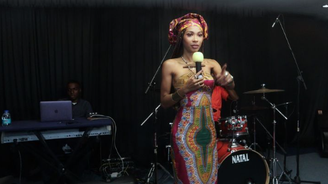

Rocker's Island Studio Sounds, located in East Trinidad, was founded in 2010 by Zoe Williams (Trindad and Tobago) and George Marksman (Jamaica), two of the regions most successful and multi-awarded sound engineers. This ultimate musical pairing is the result of their singualr goal, that is to give artists an unparalleled and incomparable studio experience.

By focusing on sound quality, productivity, and privacy, they have created a world-class state of the art space where Caribbean and international artistes alike instantly feel right at home, enabling their creative flow to record their next big hit. Since its establishment, Rocker's Island has been the birthplace for countless award winning records and albums. They provides production and engineering expertise in thier multiple recording studios. These are stacked with the highest quality equipment inside acoustic rooms tuned to perfection and outfitted with the best vintage and modern analog and digital equipment that feed directly into the Pro Tools HDX System for artists who want nothing more than the most pristine sound quality available. Rocker's Island prides itself by being staffed with a team of dedicated and passionate sonund engineering professionals, equipped with over 50 years of international experience that are ready to work with a diverse range of artists from many different genres, nations and cultures.
With such high level expertise every track exhibits refined musical taste to bring out the best in every artiste. Accessibilty to our services is 24/7 to ensure that creativity is never put on hold. We provide recording and mixing sessions, pre and post production, photoshoots, interviews, live music recordings, voiceover, private functions, and full studio bookings for our local, regional and international clients.

Multitrack Recording & Editing
The quality of a record begins with the original performance and the interepretation of the artists, which should generally be captured as accurately and transparently as possible using the best audio technology available today. However, for some music styles a different approach (Vintage, Retro or Lo-Fi) might work even better. In order to make a great record, we believe that it is essential to understand which aesthetic approach to recording and creative sound design will work best to transport the emotional quality of a certain type of music and performance.
We offer state-of-the-art digital multitrack recording for almost any combination of instruments and voices: from solo instruments and small chamber music ensembles up to large symphonic orchestra with full choir and soloists. We can record jazz and pop/rock bands, either live (with all musicians and vocalists performing at the same time) or in studio with additional overdubs.
Our Team

Zoe Williams, Owner, Chief Executive Officer
George Marksman, Owner, Chief Operations Officer
Patrick St Thomas, Chief Mastering Engineer
Dru Caigual, Head Vidoegraphy and Graphic Arts